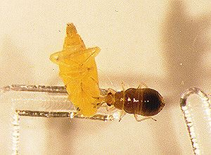
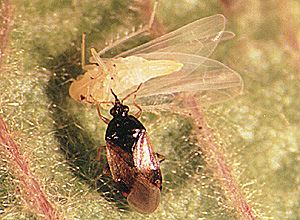

Orius vicinus,
Pirate Bug with potential to control thrips, mites and other pests of
orchard crops
The
Bug
This is a polyphagous (general)
predator of aphids, mites, thrips, apple leafcurling midge (Dasineura mali),
and froggatt's apple leafhopper (Edwardsiana
crataegi).
It was first found in 1991 in Alexandra, Central Otago and is now found
also in Canterbury. Orius
vicinus is a European species of pirate bug and the adult
is about 4mm long.
Pirate bugs are used worldwide as important biological control agents
and this is the first species recorded in New Zealand.
Photos: Orius
vicinus from http://www.hortnet.co.nz/key/stone/info/enemies/fal-enem/falpred1.htm
This
predatory anthocorid has been observed feeding on
apple leafhopper nymphs and adults in the field.
 
From New Zealand Entomologist (1994) 17: 17-21
"0. vicinus
is of potential
use in New Zealand as a biological control agent against pests in apple
and stonefruit orchards, and perhaps also in greenhouses if mass-reared
and released"
"Orius vicinus
is considered to be a biological control agent of potentially valuable
assistance against phytophagous (plant eating) mites"
"In New Zealand, 0.
vicinus has been observed to feed on Panonychus ulmi
(European red mite) in both the field and the laboratory. It has also
fed on Froggatt's apple leafhopper, Edwardsiana crataegi,
in laboratory tests. In the field, the bug has been observed in
association with both these pests and with thrips on stonefruit. Its
significance as a predator for biological control programmes is now
being investigated. "
The phenology of Orius
vicinus was studied in apple orchards in Otago,
New Zealand, from 1995 to 1998. The bugs were sampled on shoot and
fruit clusters. O. vicinus completed two generations per year with peak
numbers of adults of each generation occurring in January and
February/March, respectively. A very small partial third generation
occurred in the warmest season. Adult females from the second
generation overwintered.
Background
The retired Dr Howard Wearing
studied this predator.
I
have contacted him and he tells me that it is widespread in Otago. It
is spreading through Canterbury, where its occurence is still sporadic.
Dr Jill McLaren of Hortresearch Clyde tells me it is abundant in
commercial apple orchards and wherever there are thrips in Otago.
Dr Nick Martin of Crop and Food Mt Albert research centre in Auckland
has taken an interest in the potential of this pest to control
greenhouse thrips, and his technician Peter Workman has twice collected
it from Clyde and attempted rearing it at the research centre (in
enclosures, feeding it greenhouse thrips and mites). Although the first
generation was extremely successful at reproducing, subsequent
generations were not. Attempts at rearing it did not continue, and no
releases of this bug were made. He found the bug very easy to collect
during spring (from apple trees in Otago) and agrees that suitable
numbers for releases could be easily collected.
More recently Bioforce have established a colony, mass-reared it and
have made this predatory bug available for purchase. I have attempted
to establish it in Kerikeri during 2012.
My contact details:
Dean Satchell
RD1 Kerikeri
Northland 0294
New Zealand
(09) 4075525
(027)6793286